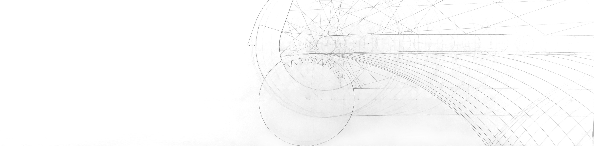
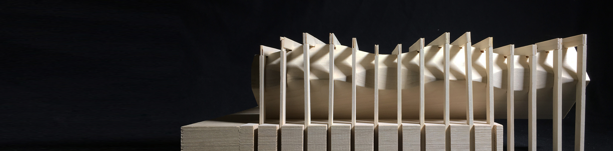

MOTION MODEL
HOME
PROJECTS

The Motion Model design was generated from a drawing mapping the movements of an ordinary kitchen tool.
Movement was captured through the evolution of repeating members over a distance.
The final design was composed of two distinct systems - linear repeating bars and a sculptural solid mass.
The base of the model curves to mirror the form of the extruded mass while also highlighting the regularity of the canopy above.

The sculpture is made to represent the oscillation of the tool members as it moves through linear space.